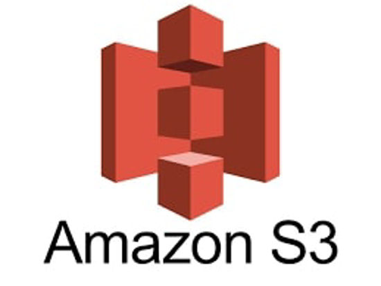

Amazon Simple Storage Service(Amazon S3)는 업계 최고의 확장성과 데이터 가용성 및 보안과 성능을 제공하는 객체 스토리지 서비스입니다. 즉, 어떤 규모 어떤 산업의 고객이든 이 서비스를 사용하여 웹 사이트, 모바일 애플리케이션, 백업 및 복원, 아카이브, 엔터프라이즈 애플리케이션, IoT 디바이스, 빅 데이터 분석 등과 같은 다양한 사용 사례에서 원하는 만큼의 데이터를 저장하고 보호할 수 있습니다.

Amazon S3는 사용하기 쉬운 관리 기능을 제공하므로 특정 비즈니스, 조직 및 규정 준수 요구 사항에 따라 데이터를 조직화하고 세부적인 액세스 제어를 구성할 수 있습니다. Amazon S3는 99.999999999%의 내구성을 제공하도록 설계되었으며, 전 세계 기업의 수백만 애플리케이션을 위한 데이터를 저장합니다.